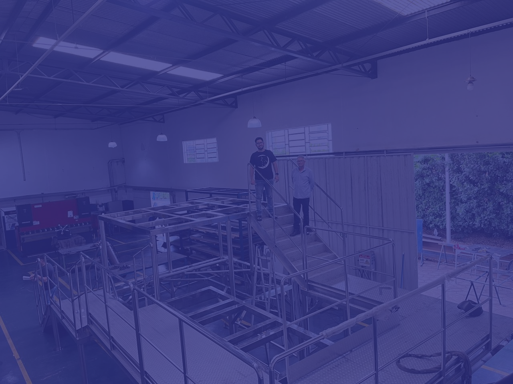
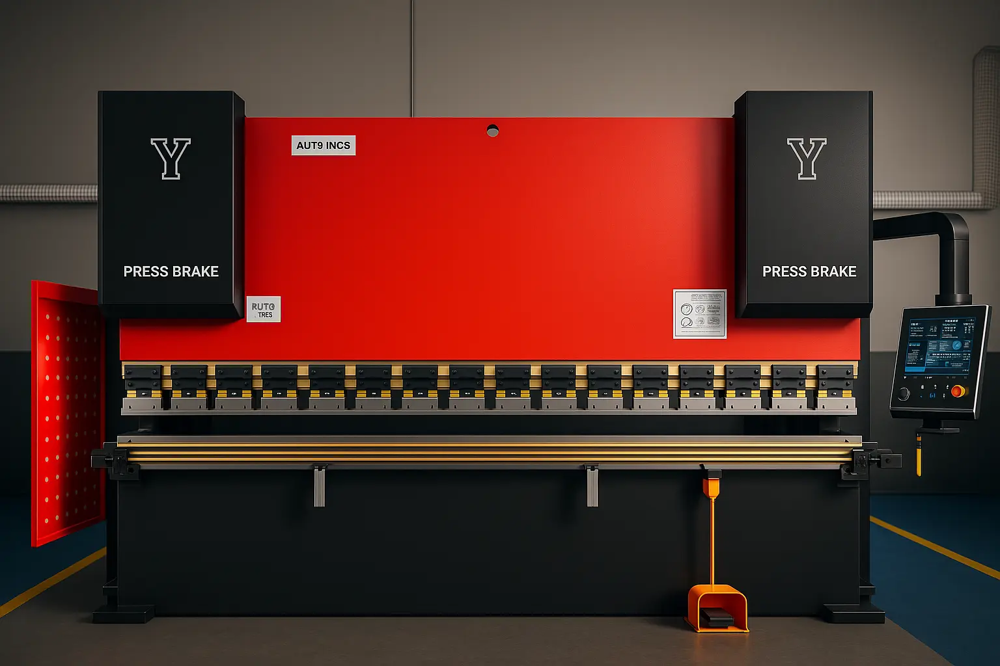
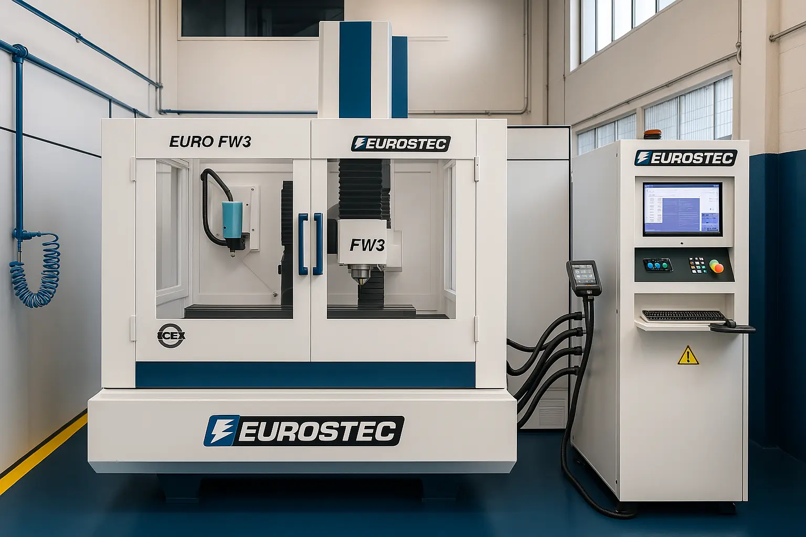
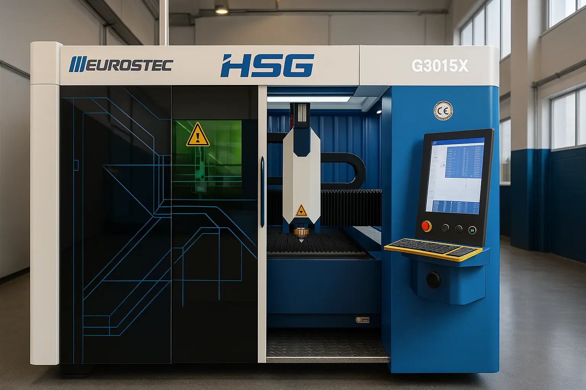
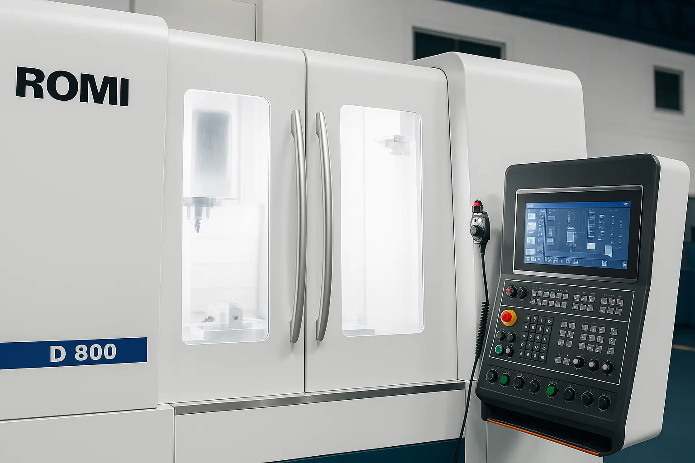

Soluções em aço inox para indústrias farmacêuticas, alimentícias e agropecuárias
Produtos fabricados com excelência e aplicações que transformam projetos em realidade. Qualidade, resistência e inovação em cada detalhe.

Produtos fabricados com excelência e aplicações que transformam projetos em realidade. Qualidade, resistência e inovação em cada detalhe.

Alta precisão, menor desperdício e eficiência no corte de materiais.

Execução sob medida com foco em qualidade, prazos e personalização.

Cortes precisos em materiais complexos, com acabamento impecável.
Peças sob medida com precisão, controle rigoroso e alta performance.

Acabamento metálico brilhante, resistente e sofisticado.

Dobra chapas metálicas com precisão e força, ideal para peças com geometria complexa e alta repetibilidade.

Alta precisão no corte de materiais duros e delicados, com acabamento fino e mínimo desperdício.

Cortes rápidos, limpos e detalhados em chapas metálicas, garantindo agilidade e acabamento superior.

Usinagem computadorizada de alta precisão para fabricação de peças complexas com total controle dimensional.
Explore nossa linha de equipamentos e estruturas desenvolvidos com aço inox de alta qualidade, pensados para atender às demandas mais exigentes dos setores industrial, hospitalar, alimentício e da construção civil.

Tanques de aço inox usados para armazenar líquidos como água, leite, produtos químicos e combustíveis.

Estrutura hospitalar resistente e fácil de higienizar, muito utilizada em hospitais, clínicas e ambulâncias.

Utilizados para o preparo em grande escala de alimentos ou processos químicos. Robustos e com longa durabilidade.

Plataformas e estruturas de mezanino feitas com cantoneiras e vigas de inox para áreas industriais e comerciais.

Sistemas de condução de líquidos para indústrias farmacêuticas, de alimentos e bebidas, com altíssimo padrão de higiene.

Bancadas de inox ideais para cozinhas industriais, laboratórios e áreas de produção, fáceis de limpar e altamente resistentes.

Estruturas de segurança instaladas em escadas, varandas e áreas industriais, com acabamento elegante e durabilidade.

Equipamentos para filtrar partículas sólidas de líquidos e gases em processos industriais.

Usadas em fachadas arquitetônicas, proteções industriais, filtros e ventilação de equipamentos.
Carrinhos de transporte resistentes para cargas em hospitais, cozinhas industriais e linhas de produção.